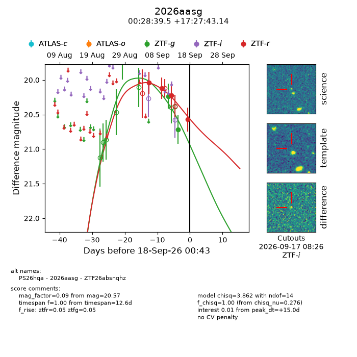
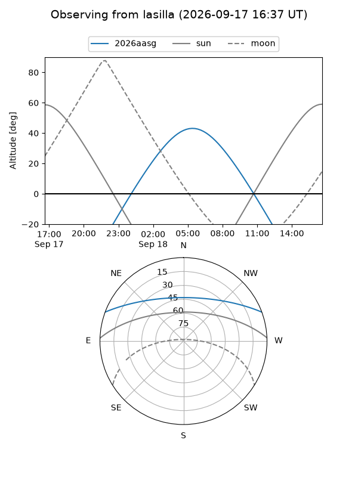
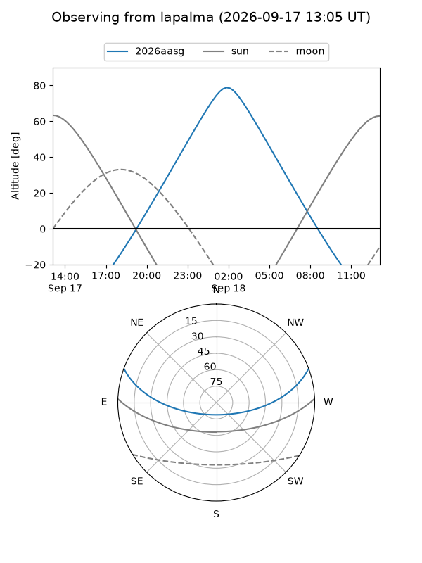
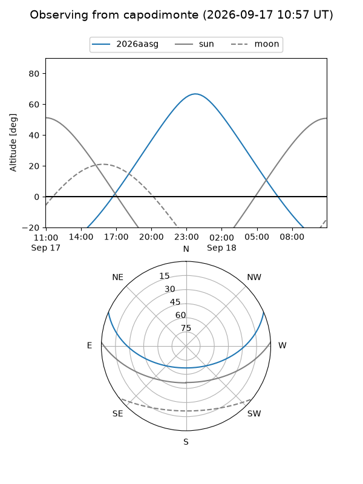
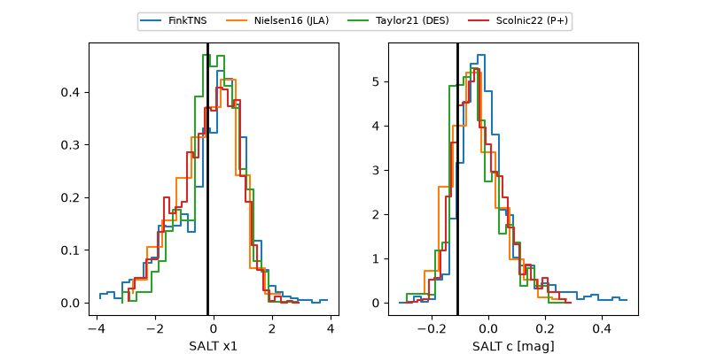

2026aasg
Target 2026aasg at 2026-09-18 00:44
Aliases and brokers:
FINK-ZTF: ztf.fink-portal.org/ZTF26absnqhz
Lasair-ZTF: lasair-ztf.lsst.ac.uk/objects/ZTF26absnqhz
ALeRCE-ZTF: alerce.online/object/ZTF26absnqhz
YSE-PZ: ziggy.ucolick.org/yse/transient_detail/2026aasg
TNS name: wis-tns.org/object/2026aasg
Direct TNS query: direct search
alt names
ZTF26absnqhz (ztf,fink_ztf)
2026aasg (tns,yse)
PS26hqa (panstarrs)
Coordinates:
equatorial (ra, dec) = 7.1648,+17.46198
equatorial (HMS+DMS) = 00:28:39.54,+17:27:43.14
galactic (l, b) = (115.2298,-45.06883)
Flags:
TNS type: nan
peak dt: +15.0
Photometry:
last ztfg=20.72, ztfr=20.57
2 ztfg, 4 ztfr detections
Lightcurve

Visibility



Additional plots
